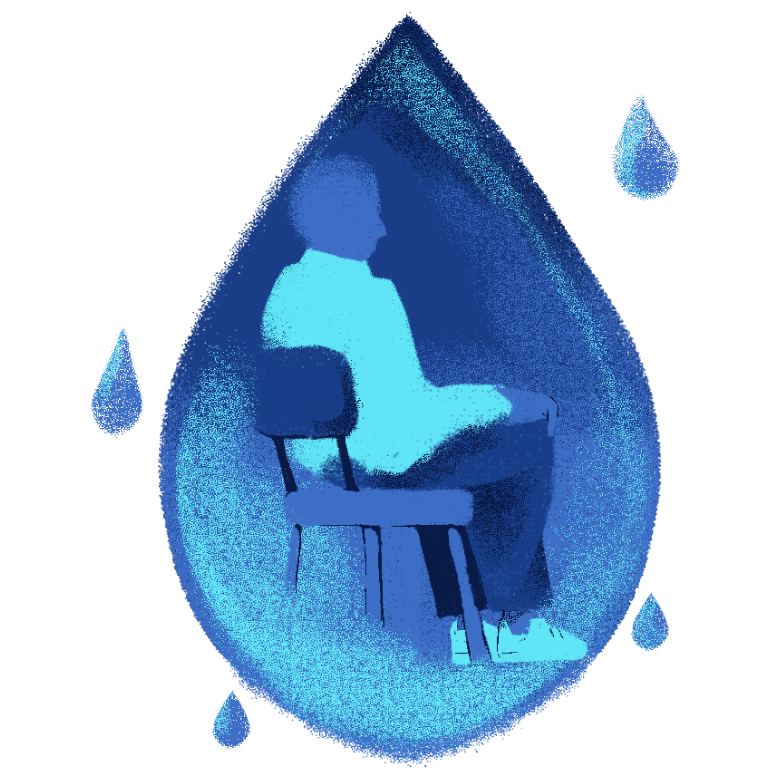

DEPRESSION
Experiencing grief will never be easy. The feeling of being lost in your sadness over the weight of life's challenges will put anyone, even the strongest person alive, to their knees with tears on their cheek. Some feel lonely, regretful, and hopeless. Some fear of never being able to see a new light in their life, as if they have lost their purpose and meaning for moving forward. But this state of vulnerability is always to fully understand what we truly feel deeply.
It is difficult to see a person depressed, but it is more difficult to fully embrace the fact that you may be or you are depressed. Yet it is when we let ourselves open up for once and show our true selves to the people who care for us the most that we fully embrace our vulnerable side. The key was never to push it aside but to embrace it.
A problem of finding the right people to show vulnerability still persists and is one of the fears of people who struggle with depression. They may fear that no one would truly understand their feelings, or they fear that people would see them in their weakest state, thinking they look pathetic, or they think that reaching out is pointless. There are a whole lot of reasons why people struggle to or won't open up to anyone because you could never truly know what someone is going through or the thoughts haunting in their head.
Depression, weight in heart and soul
Depression can be described as the feeling of being low and struggling to commit to anything, as if everything feels harder to do. It is important to understand that depression affects not only the person's emotional and mental health but also physical health. Occasionally, it would lead to hopelessness and, in the worst cases, suicidal thoughts.
It presents itself in different ways; sometimes it is difficult to decipher that someone is depressed. Everyone has their own way of expressing their emotions, which is why some of the happiest people we know in our lives might turn out to be dealing with severe depression when they're all alone.
Symptoms of depression:
- Lack of energy
- Emptiness
- Struggle to enjoy the things you once used to
- Overwhelming feeling of sadness
- Lack of confidence and self-esteem
- Poor concentration
- Low self-worth
- Hopelessness
- Anxiety
- Restlessness
- Suicidal thoughts
Physical symptoms of depression:
- Difficulty in sleeping
- Verbal changes such as in speaking and moving
- Undescribable pain and aches
- Lack of appetite
Yearning To Feel No More Fear
It is understandable and valid for a person to struggle to open up their vulnerable side. It requires strength and confidence, which may be some things that may lack their time of need. Letting go of the fear of being seen as pathetic or weak is one of the hardest steps to take in valuing our vulnerability, but it opens us up to the support we desire the most. It is important to reach out and find people who won't just give you advice to fix a problem but also be there for you to listen and become your safe space. You don't have to force yourself; take it one step at a time.
Seek a friend, a family member, or a trained professional, if you really need to. Take self-help resources like books and online behavioral therapies. It is important to seek the right help for you. Seek the scenario that makes you feel more comfortable, something that values respect, and where your boundaries are acknowledged.
Empathy
If you know someone who may be depressed, it is important to understand first how they display their symptoms and how it affects their behavior. Everyone has their own coping mechanisms, which can't always be understood at first glance. There may be times that they may not be looking for someone to confide in, or they simply don't want your help. It is important to respect their decisions and let them reach out when they need to. Stepping out of their comfort zone is a good thing, but forcing them to do it will just make matters worse.
Always make your presence felt. Even if they don't want your help yet, let them know you are willing to shoulder their burden together. Understand that you are not there to solve their problems, but be the person who will listen and acknowledge their feelings and emotions. It is alright to provide advice, but understanding them should come first to fully grasp their full story.
Just by providing your time to them is enough to ease their depression. If you want to give them something to do to distract them, make sure that it fits their personality and interests. Light their spark for the things they used to love once again. Help them out in overwhelming tasks and activities. There are so many ways to be there for the person you want to support.
Understand how to silence your fears by stepping out of your comfort zone when you are ready.
Listen thoroughly and understand one another. Have room for growth.

Give yourself some time to understand your true emotions. Don't rush, the people who care for you will be there when you are ready.